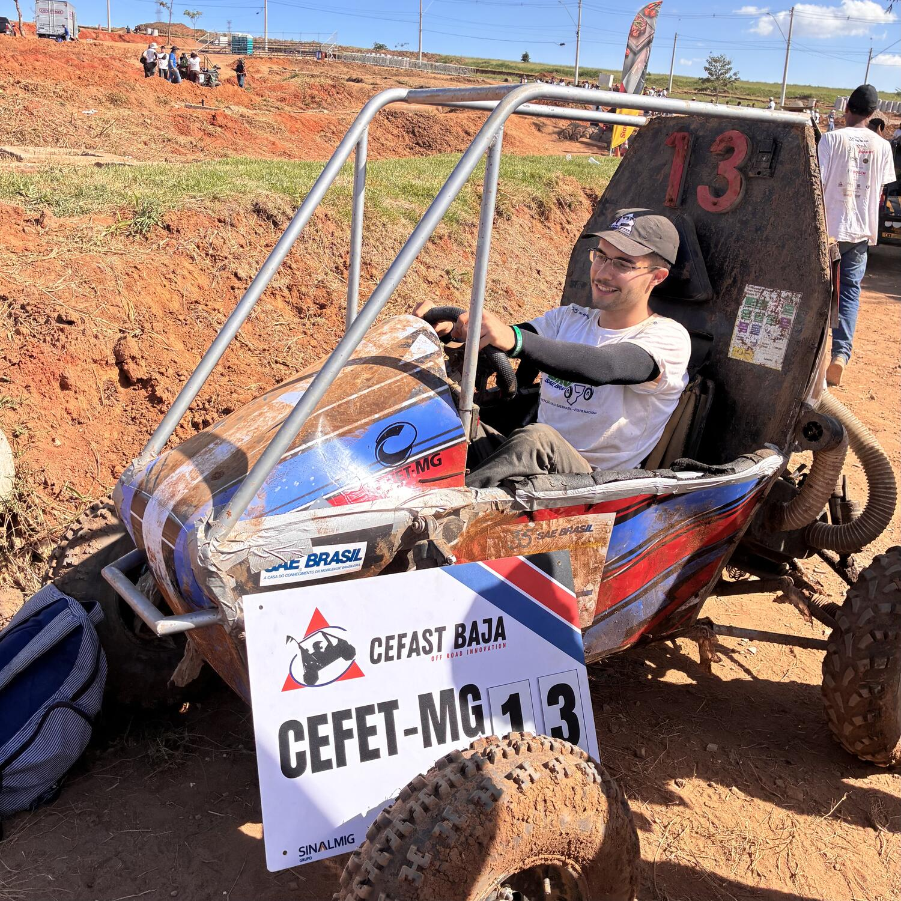
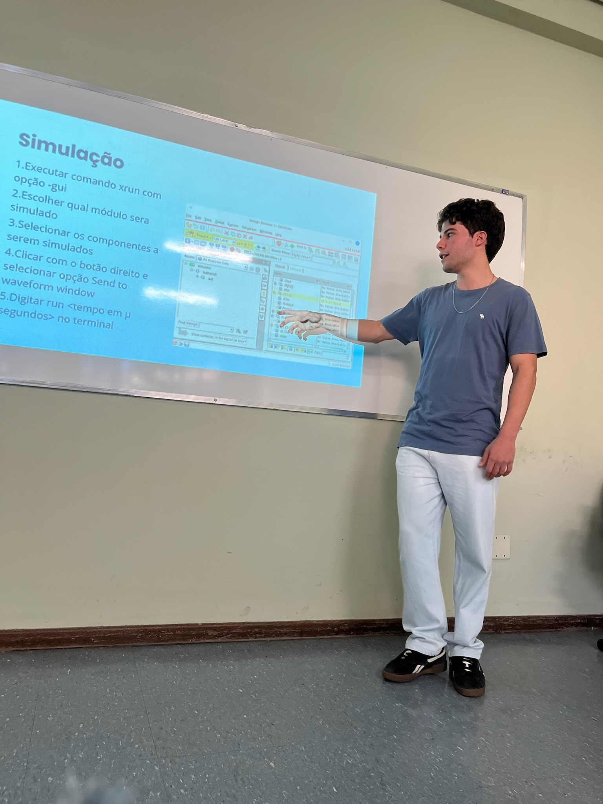
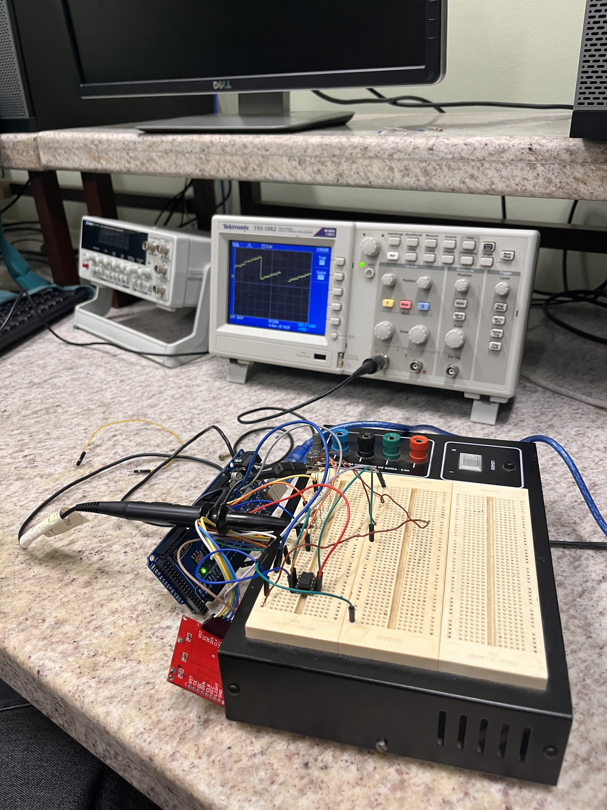
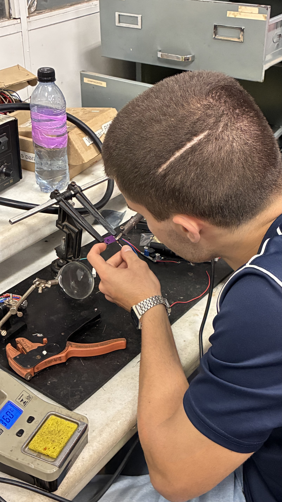
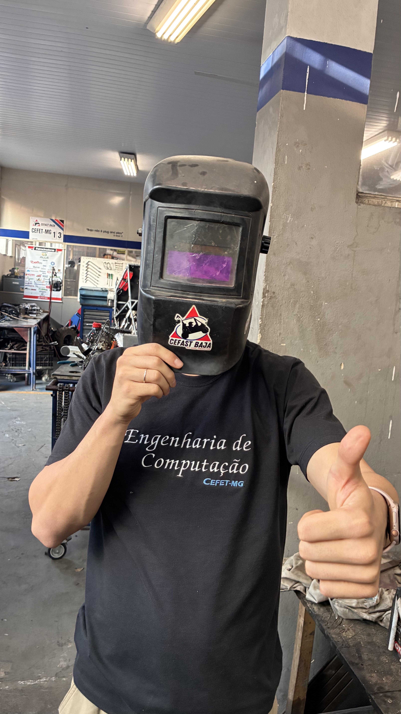
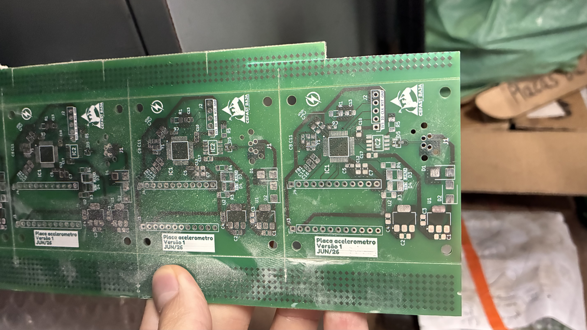

Meu nome é David Lanza e sou aluno do 7º período de Engenharia de Computação pelo CEFET-MG. Natural de Sete Lagoas, me mudei para Belo Horizonte para cursar graduação.





Imagens relacionadas à minha trajetória no CEFET-MG
Participei de diversos projetos ao longo da faculdade. Ingressei no COMPET, programa de educação tutorial do curso de Engenharia de Computação na equipe de marketing, sendo promovido à líder da equipe pouco tempo depois.
Desenvolvi um trabalho para o LabTEM (Laboratório de Transitórios Eletromagnéticos) como bolsista de Iniciação Científica, desenvolvendo um software/framework que integrava a geração de parâmetros estatísticos no Matlab para um grande volume de simulações de transitórios em linhas de transmissão no software ATP (Alternative Transient Program). O programa foi desenvolvido integrando scripts em Matlab e Powershell.
Durante 1 semestre da graduação, atuei como monitor da disciplina de Arquitetura e Organização de Computadores 1
De outubro de 2025 até o presente momento sou membro do subsistema de eletrônica da equipe de competição CEFAST BAJA SAE. Neste projeto sou responsável por confeccionar partes do chicote elétrico do carro (dimensionamento de fios, crimpagem de fios e terminais, solda/brasagem), projetar placas de circuito impresso e por programar microcontroladores. Além disso, apresentei a Proposta de Negócios na Etapa Nacional da Competição BAJA SAE no ano de 2026, obtendo a 2º posição na categoria.
No meio do ano de 2025, passei a integrar a equipe de desenvolvimento responsável pela programação e teste dos drivers do BlueMacaw/u32br, projeto fomentado pelo governo brasileiro para o desenvolvimento de um microcontrolador nacional.
Tenho interesses nas áreas de arquitetura de computadores, microcontroladores, setor automotivo, hardware e eletrônica.